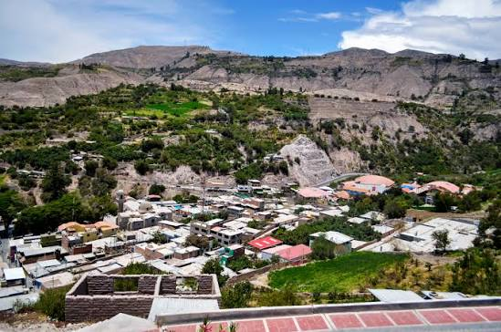
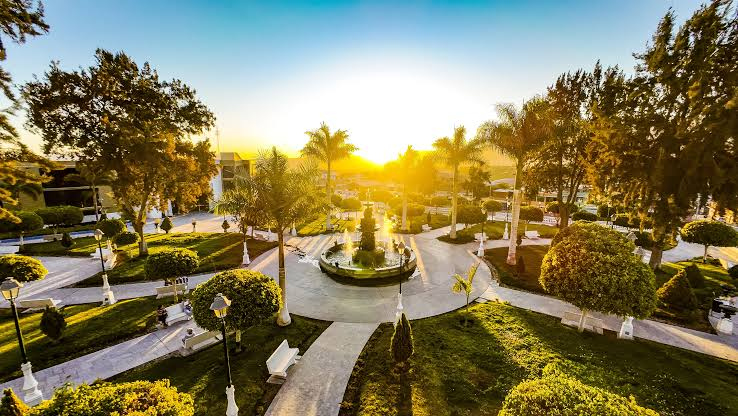
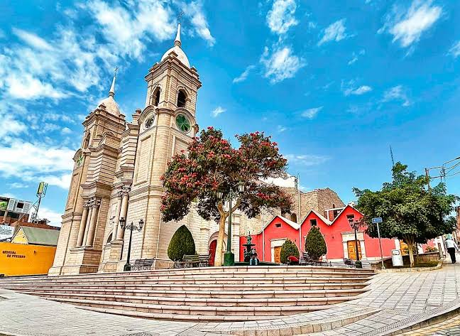
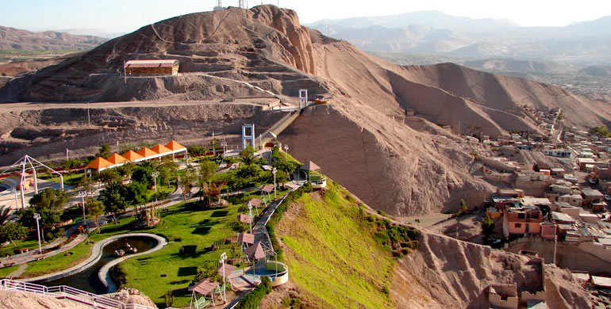
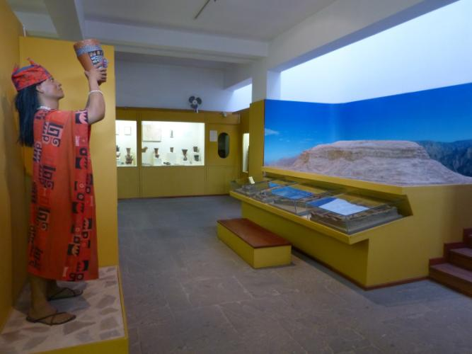

Plaza de Armas
Lugar centrico de la ciudad de Moquegua.
Se construyo después de una batalla. conoce más sobre la Plaza de Armas
Conoce algunos de los principales lugares turísticos de nuestra región.
Lugar centrico de la ciudad de Moquegua.
Se construyo después de una batalla. conoce más sobre la Plaza de Armas

Torata es un distrito de la región Moquegua, conocido por sus paisajes, historia y atractivos turísticos.
Visita sus paisajes agrícolas y conoce sus tradiciones. conoce más sobre la ciudad de Torata

Las cataratas de Mollesaja son un atractivo natural ubicado en el distrito de Torata.
Conoce este hermoso paisaje de la bella Torata. conoce más sobre las Cataratas de Mollesaja

Samegua destaca por sus paisajes, su gastronomía y sus atractivos turísticos.
Conoce sus paisajes y atractivos turísticos. conoce más sobre Samegua

Es conocido por habar sido reeconstruido en priedra.
Adentro se resguarda Santa fortunata y el Señor de los Milagros. conoce más sobre la Catedral Santo Domingo
Su gran particularidad es su forma recta y achada en su cima.
Conoce la leyenda del Toro Dorado. conoce más sobre el cerro baul.

Evidencia de la cultura de viñedos de Moquegua.
Lugar turístico representativo. conoce más sobre las tinajas

Se encuentra en chechen. Su puente, parques y la gran estatua del Cristo Blanco lo hacen emplematico.
Es un lugar excelente para pasar con amigos, familia y pareja. conoce más sobre el Mirador el Cristo Blanco

Presente al frente a la Plaza de Armas, alberga elementos arquelógicos extraordinarios.
Expone la historia de Moquegua cronológicamente. Desde los primeros habitantes, hasta la conquista. conoce más sobre el museo Contisuyo